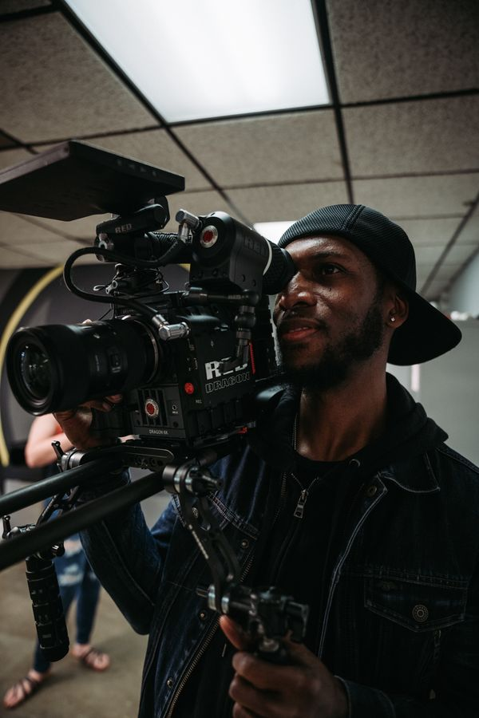

A considered brief.
A shared understanding of the audience, purpose, deliverables and production needs.
 FILM & MEDIA
FILM & MEDIADecipher is a film and media production studio. We work with brands and storytellers to turn an idea into something people can see, hear and feel.

We believe a good production starts with understanding what the film needs to say. That clarity guides the script, the visual treatment, the shoot and the edit.
Our focus is film and media: commercials, narrative and documentary projects, branded content and post-production. The approach is shaped around the story, not a fixed package.
Explore our approach ↗A shared understanding of the audience, purpose, deliverables and production needs.
Creative approvals and review stages agreed before production and post-production begin.
Delivery formats, versions and usage discussed upfront, with changes scoped together.